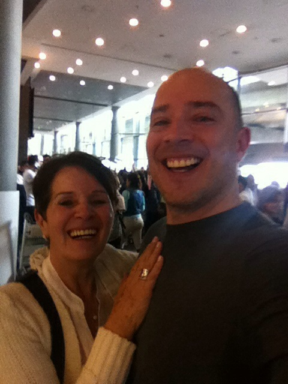

Hay momentos que no se borran jamás.
Este fue uno de ellos.
Después de más de quince años sin vernos, volví a encontrarme con mi mamá en el aeropuerto de Bogotá.
En medio de tanta gente, del ruido, de las maletas, del movimiento constante y de ese mundo convulsionado que no se detiene por nadie, ocurrió algo que para nosotros lo detuvo todo.
Nos vimos.
Nos abrazamos.
Y lloramos.
Fue un momento súper intenso. Muy difícil de describir completamente, porque en ese abrazo se juntaron muchas cosas al mismo tiempo: tristeza por todo el tiempo perdido, dolor por ella, por tantos años sin ver a su primogénito, impotencia por no poder hacer nada ya con respecto al tiempo que había pasado, y al mismo tiempo una felicidad inmensa de saber que por fin yo estaba ahí, frente a ella.
Eso era lo más importante.
Lo primero que me dijo fue:
“¡Mi Andy!”
Todavía puedo escuchar esas palabras.
No fueron muchas. No hicieron falta.
En esas dos palabras venía todo: su amor, su alegría, el alivio de verme, la intensidad del reencuentro y ese vínculo que nunca dejó de existir.
En la foto quedó grabado algo que todavía me conmueve profundamente: su sonrisa, su felicidad y su mano derecha sobre mi pecho de una manera que casi no sé describir.
Tal vez era su forma de confirmar que yo estaba allí de verdad.
Tal vez era simplemente amor.
Tal vez era ambas cosas.
De todas las escenas que conservo de ella, esta es una de las más vivas.
Porque en medio del caos del mundo, por un instante, solo existimos nosotros dos.